Padronizar a linguagem para medir melhor — e medir para gerir melhor
As normas organizam conceitos, terminologia e sistemas de gestão. Os indicadores transformam acontecimentos da manutenção em informações comparáveis para apoiar decisões.
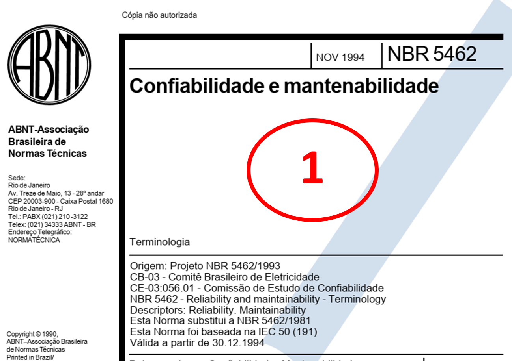
NBR 5462: uma linguagem comum para confiabilidade e mantenabilidade
No material, a NBR 5462 aparece principalmente como referência terminológica. Ela organiza termos e relações usados na gestão da manutenção.
- Defeito: desvio em relação aos requisitos.
- Falha: término da capacidade de desempenhar uma função requerida.
- Pane: estado de incapacidade de um item cumprir a função requerida.
- Distingue estados de disponibilidade e indisponibilidade.
- Organiza termos de confiabilidade, mantenabilidade, manutenção e tempos relacionados.
O material destaca ainda quatro anexos: relações entre defeito/falha/pane, símbolos e abreviações, e equivalências terminológicas em português e inglês.
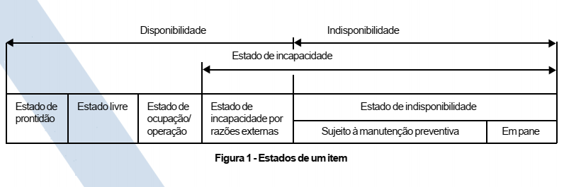
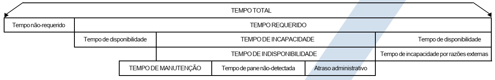
Confiabilidade, mantenabilidade e disponibilidade
Exemplo da máquina de rotulagem
Nos 30 dias do exemplo do material: 720 h planejadas, 5 falhas e 10 h totais de reparo.
| Indicador | Resultado apresentado |
|---|---|
| Tempo operacional real | 710 h |
| MTTR | 2 h/falha |
| MTBF | 142 h/falha |
| Disponibilidade | 98,61% |
| Taxa de falhas | 0,00704 falhas/h |
| Confiabilidade em 24 h | 84,5% |
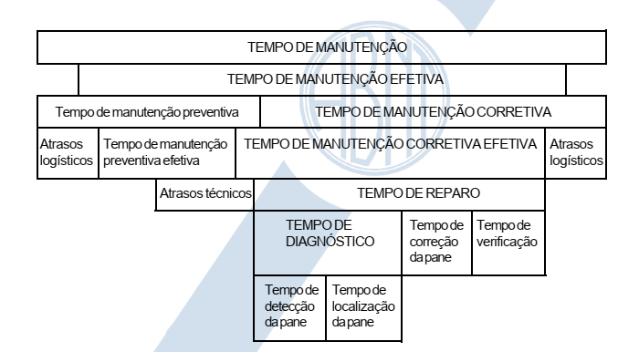
ISO 55000: da manutenção à gestão de ativos
O material apresenta a família ISO 55000 como referência para estruturar a gestão de ativos:
- ISO 55000: escopo, benefícios, termos e definições;
- ISO 55001: requisitos para um sistema integrado e eficaz de gestão de ativos;
- ISO 55002: diretrizes para implementação.
A gestão de ativos é associada no material a desempenho financeiro, decisões informadas, gestão de riscos, conformidade, reputação e sustentabilidade organizacional.
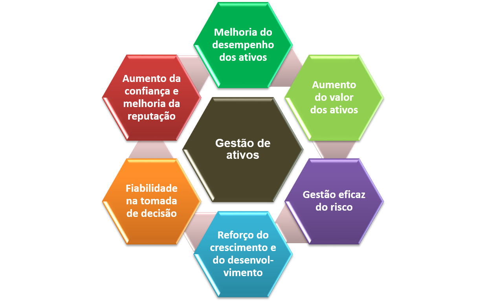
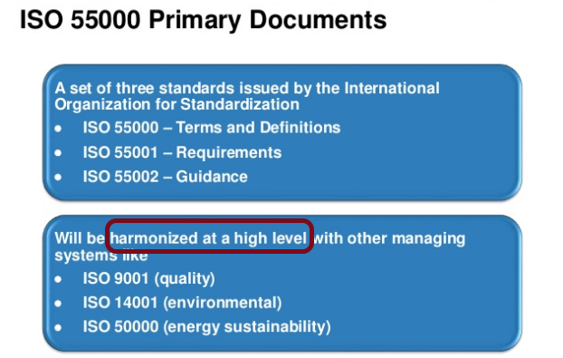
ISO 13374: arquitetura para monitoramento de condição
Dentro do conjunto de normas abordado na aula, a ISO 13374 aparece vinculada ao processamento de dados de monitoramento e diagnóstico de condição.
A figura original organiza o caminho da informação em etapas, indo da aquisição dos dados até a apresentação/avaliação da condição e recomendações.
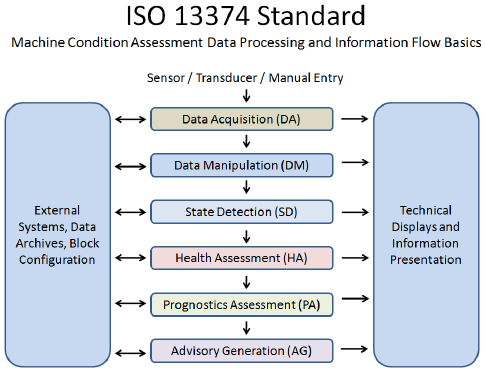
Indicadores: medir o que realmente orienta a decisão
O material classifica indicadores em estratégicos, produtividade/eficiência, qualidade/eficácia, efetividade/impacto e capacidade.
Premissas de um bom indicador
Agrupamento aplicado à manutenção
| Gestão dos ativos | Gestão de mão de obra | Gestão de custos | Gestão das atividades |
|---|---|---|---|
| idade e disponibilidade dos ativos | HH, produtividade, treinamento, absenteísmo | custos por tipo, ativo, grupo e consumo | previsto × realizado, backlog, retrabalho, segurança |
KPIs de manutenção: confiabilidade, carga de trabalho e custo
MTBF, MTTR e disponibilidade
O exemplo do motor elétrico do material resulta em MTBF de 181,6 h, MTTR de 12 h e disponibilidade de aproximadamente 93,8%.
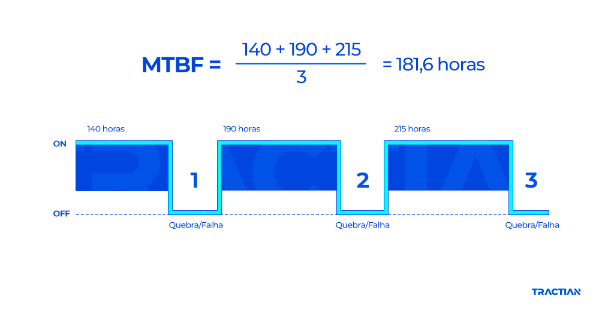
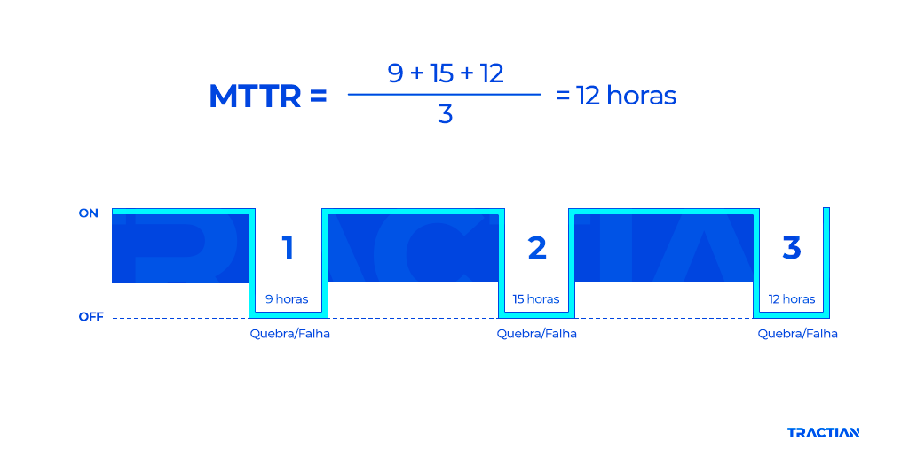
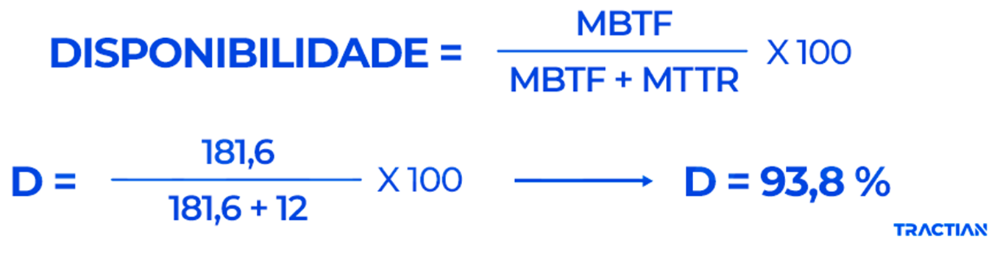
Backlog
É o passivo de atividades de manutenção que ainda precisa ser executado. O material propõe relacionar as horas das ordens em carteira com as horas disponíveis da equipe.
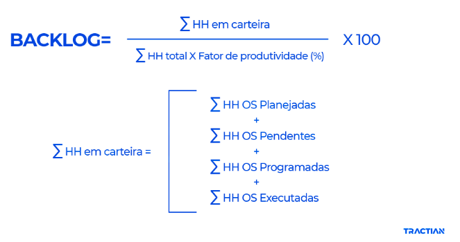
Custos
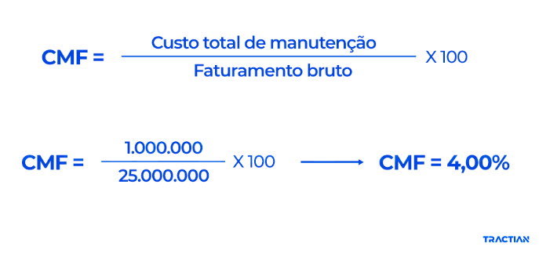
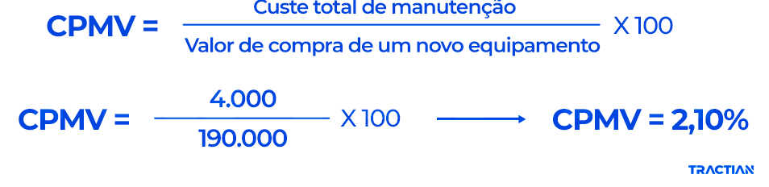
OEE: disponibilidade × desempenho × qualidade
O material complementar apresenta o OEE como um indicador que mapeia a “paisagem de perdas” entre a capacidade teórica do equipamento e sua saída efetiva.
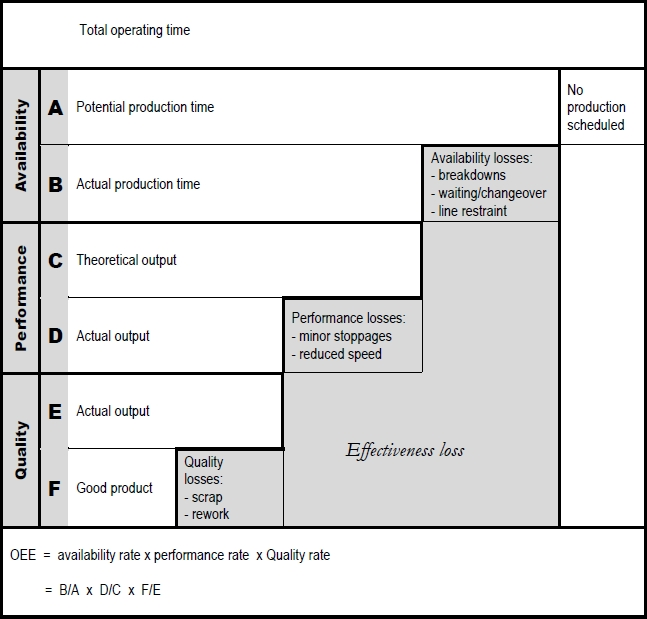
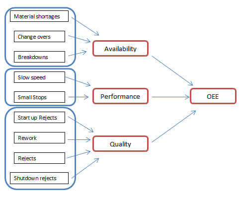
OEE e gestão visual: conectar manutenção ao negócio
O material mostra que OEE não é apenas uma conta de chão de fábrica. Melhorias em disponibilidade, desempenho e qualidade podem afetar capacidade produtiva, margem, ativos necessários e resultados econômicos.
A gestão visual complementa essa lógica: tendências de MTBF, MTTR, número de quebras e outros indicadores precisam ficar visíveis para acompanhamento e ação.
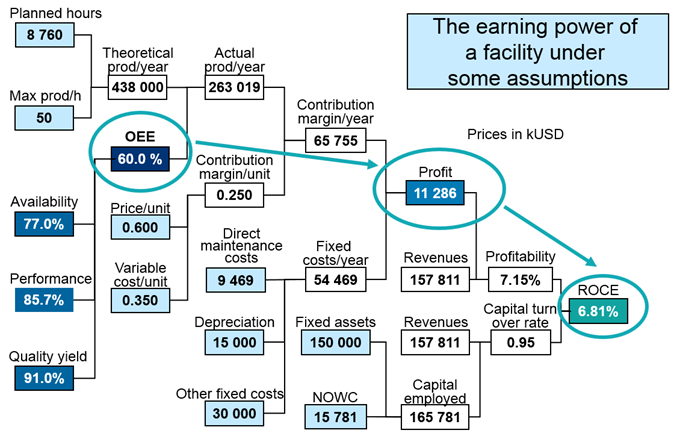
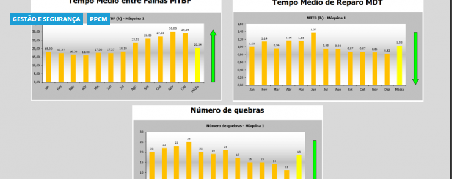
O que o estudante precisa levar
Questões
Conteúdo reorganizado exclusivamente a partir dos materiais fornecidos: normas de gestão da manutenção, indicadores de manutenção e documento complementar sobre OEE. As figuras são originais dos próprios arquivos.